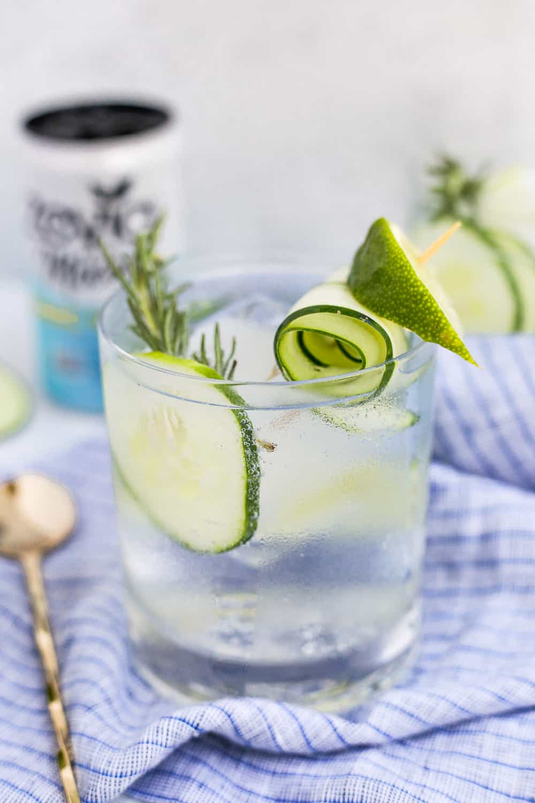

Cucumber Lime Mocktail Recipe!

Description
Super refreshing on a hot day, this cucumber-lime non-alcoholic spritzer is perfect for those who prefer no alcohol,
and a fun addition to your backyard BBQ! You can easily double or triple the recipe to have extra on hand.
Ingredients
- 1 English cucumber, peeled
- 1 English cucumber, peeled
- 1 1/2 tablespoons sugar
- 2 cups ice
- 8 fluid ounces tonic water
- 2 slices lime, for serving
Steps
- Cut two thin slices from cucumber and set aside for garnish. Chop remaining cucumber into large chunks and place
in blender with lime juice and sugar. Blend until smooth. Strain the cucumber mixture through a fine strainer into a jar. You should have about 8 ounces.
- Fill two glasses with ice. Divide the mixture between the glasses, about 4 ounces each. Top each glass with 4 ounces
of tonic water. Garnish with a cucumber and lime slice and serve.